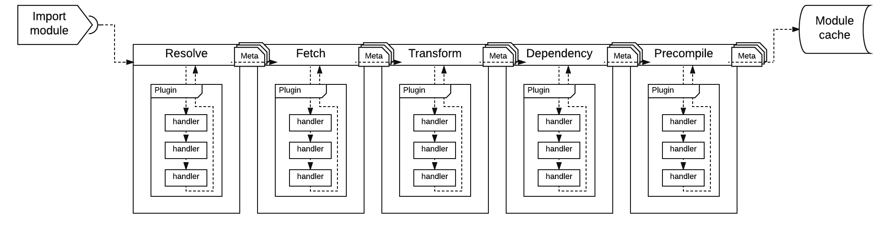

Bit-loader
Framework for building module loaders with very little effort


Table of Contents
- Introduction
- Examples
- Install npm dependencies, build, and test
- Architecture Overview
- Plugins
- Default providers
- Module Meta
- Pattern Matching
- License
Introduction
Framework for building module loaders. This is the core library for bit-imports and bit-bundler.
Examples
Please checkout the examples. There you will find different recipes for setting things up.
Install npm dependencies, build, and test
$ npm install
$ grunt build
$ grunt test
All build artifacts will be in the dist folder.
Architecture Overview
bit-loader is composed of a two stage system. The first stage is responsible for loading and processing files via puggable pipelines. And a second stage is responsible for building (compiling and linking) modules.
The first stage - the module loading stage
This stage is responsible for loading files from storage and processing them in order to generate a graph, which we refer to as module graph. The module graph is basically a tree structure that outlines the dependency hierarchy of the modules.
This stage is composed of several pluggable pipelines that cascade information from one pipeline to the next. This information is encapsulated in an object we refer to as module meta. More information on the module meta objects can be found here. The flow that module meta objects go through is described below:
First, we need to convert module names to file paths in order to load modules from storage. This conversion is called module name resolution, which is done in the resolve pipeline. The path generated in the resolve pipeline is then used by the fetch pipeline to load module files from storage. These files are subsequently processed by the transform pipeline, which is generally where all transpilation/transformation is done. The result of the transform pipeline is pushed through the dependency pipeline, which pulls out dependencies and recursively feeds them through the first stage (module loading stage) until no more modules are left to load into the module graph. And finally, a helper pipeline called precompile that allows you to preemptively set the module exports, which effectively prevents modules from being processed in the build stage.
This stage is entirely asynchronous, and the output is a module graph.
5 pipelines
The module loading stage has 5 pipelines, which are described below.
-
resolve- responsible for generating paths to read module files from storage. -
fetch- responsible for loading files from storage. -
transform- responsible for processing and transforming loaded files. E.g. ES2015 to ES5 via babeljs. Or CoffeeScript to JavaScript. -
dependency- responsible for parsing out dependencies from the loaded files and recursively feeding them to the module loading stage. -
precompile- provides you with a hook for preemptively building modules in the fetch stage, which effectively prevents module processing in the build stage.
These five pipelines are pluggable, which means that you can register handler functions to process module data in each one of them. These pipelines are executed sequentially in the order listed above, with each pipeline cascading data from one to the next. Furthermore, all these pipelines use Promises to orchestrate any asynchronous processing done by each configured handler.
Each one of these pipelines (with the exception of precompile) has a corresponding pre and post companion. That means that resolve really provides you with preresolve, resolve, and postresolve.
More details on how to hook into these pipelines can be found in the plugins section.
BTW - pipelines are internally known as
Services
The second stage - the module building stage
The build stage (compile + linking) is where the transformed files are converted to evaluated code, which is what host applications generally consume.
The build stage is synchronous and it is not pluggable.
The combination of the first (asynchronous) stage with the second (synchronous) build stage enables support for CJS,AMD, and ES6 modules simultaneously.
Plugins
A plugin is a container with handler functions that hook into the pipelines in order to load and process modules.
A handler is fundamentally a
transformas found in many other systems. However, it is calledhandlerinbit-loaderto prevent confusion with thetransformpipeline.
Handler arguments and return values are:
-
param { object }
meta- Object with information to be processed. See module meta. -
param { object }
options- Configuration object for the particular handler. -
param { function }
cancel- Function to cancel the execution of the plugin handlers for the particular pipeline the handler is executing on. - returns { object | Promise } Object with properties to be merged into the module meta object. Plugin handlers can alternatively return promises to control asynchronous data processing.
The example below is a plugin with a handler that hooks into the fetch pipeline to load modules from storage, and another handler that hooks into the transform pipeline to add 'use strict;' to loaded modules.
// Plugin handler to load file from storage using the fetch API.
function loadFile(meta, options, cancel) {
return window
.fetch(meta.path)
.then(function(response) {
return {
source: response.text();
};
});
}
// Plugin handler to add `use strict` to loaded modules
function addStrict(meta, options, cancel) {
return {
source: "'use strict;'\n" + meta.source
};
}
// Configure plugin with the two handlers
bitloader.plugin({
fetch: loadFile,
transform: addStrict
});Plugins can take a single or an array of handlers, and a handler can be a module name (a string). When a handler is a module name, bit-loader will dynamically load it at runtime. The following example shows the handlers passed in as an array and one of the handlers is a module name.
bitloader.plugin({
fetch: [ loadFile ],
transform: [ "add-strict" ]
});When a handler is an object, a property handler is expected to be defined as either a module name or a function. Some of the reasons to define a plugin handler as an object is to specify options to be passed onto the handler function when it is executed and/or to configure pattern matching. See pattern matching.
The example below configures a plugin handler as an object. Notice the handler is "add-strict" which is the name of the module to be dynamically loaded at runtime. The options for the handler is also forwarded to the handler function when it is invoked.
bitloader.plugin({
fetch: loadFile,
transform: {
handler: "add-strict",
options: {
inlineMap: true
}
}
});Plugins also provide a way to define the shape of the modules your plugins can process via pattern matching. For example, you can specify properties like the module path, module name, or even match content in the module source. Below is an example configuring a plugin to only process files with js and es6 extensions:
bitloader.plugin({
extensions: ["js", "es6"]
});We did all the previous steps separately for illustration purposes, but we can certainly do all that stuff in a single call.
var bitloader = new Bitloader();
bitloader.plugin({
extensions: ["js", "es6"],
fetch: loadFile,
transform: addStrict
});Or alternatively, via bit-loader's constructor
var bitloader = new Bitloader({
plugins: [{
extensions: ["js", "es6"],
fetch: loadFile,
transform: addStrict
}]
});Default providers
All pluggable pipelines have an optional default provider, which is just a default handler that is executed when no plugin can process a particular module. These are configured by providing the corresponding handlers in bit-loader's constructor.
bit imports and bit-bundler both implement default providers to give base functionality without configuring plugins.
Example
function resolvePath(meta) {
return {
path: "path/to/module/" + meta.name
};
}
function loadFile(meta) {
return window
.fetch(meta.path)
.then(function(response) {
return {
source: response.text();
};
});
}
// The compilation is not pluggable. However, you can always set `exports` in
// any stage to tell bit-loader that the module is ready for consumption.
function compileModule(meta) {
return {
exports: eval(meta.source)
};
}
//
// Instantiate bitloader with default providers.
//
var bitloader = new Bitloader({
resolve : resolvePath,
fetch : loadFile,
precompile : compileModule
});Module Meta
So what exactly are the different pipelines passing around anyways? They are passing around a module meta object, which is an object that contains the current state of the module. This object is an intermediate representation that the build stage uses to create module instances that the host application ultimately consumes.
Modifying module meta objects is the primary responsibility of the different pipelines.
The basic shape looks like this, but plugin handlers are free to add more data to it.
-
deps{ Array[ string ] } - Collection of module names a particular module depends on. Used by thedependencystage. -
name{ string } - Name of the module to load. Used byresolveto figure out thepath. -
path{ string } - Path for the module file. Used byfetchto load the module file. -
source{ string } - File content of the module. Use bytransformto transpile the module content. -
referrer{ { string: path, string: name } } - Information about the module requesting to load the current module.
Pipeline Flow of the first and second stage
-
first stage (fetch stage) async
- create moduleMeta
- resolve (moduleMeta)
- calculate module path from moduleMeta.name and set moduleMeta.path
- fetch (moduleMeta)
- read module file using moduleMeta.path and set moduleMeta.source
- transform (moduleMeta)
- run custom transforms and set moduleMeta.source
- dependency (moduleMeta)
- parse out dependencies from moduleMeta.source and set moduleMeta.deps
- recursively feed each item in moduleMeta.deps through the first stage
- precompile (moduleMeta)
- optionally builds and sets moduleMeta.exports, which prevents the build stage from processing the particular module
-
second stage (build stage) sync
- compile - evalutes moduleMeta.source
- link - calls factory, creates module instance, and sets module.exports
Visual of fetch pipelines

Pattern Matching
Pattern matching rules allow you to define which modules are processed by bit-loader. This is accomplished by defining match, ignore, and extensions rules, which can be defined in plugins and in plugin handlers. You can also specify ignore rules in bit-loader instances. This combination gives you lots of control over what parts of your setup can process particular modules.
matchandignorerules are objects whose properties are matched against properties in module meta objects. For example, if you have amatchrule object with a property calledpath, then thepathin module meta will be tested to determine if the particular module meta can be processed.extensionsrules is a strings or array of strings to match the file extension of the module being loaded.
bit-loaderpattern matching rules are an abstraction on top of roolio, so feel free to explore different matching rules, including custom ones. But generally, you will only specify strings and regexp.
match
match rules define which modules are processed by bit-loader.
The following example sets a match rule in a plugin to only process modules that have src/views in the path. All other modules are ignored by this plugin.
var Bitloader = require("bit-loader");
var bitloader = new Bitloader();
bitloader.plugin({
match {
path: /src\/views/
},
transform: [
function(meta) {
console.log(meta.name);
}
]
});Expanding on the previous example, we set a match rule for a particular plugin handler so that it only processes modules with names that end in region. This basically tells the plugin that it can only process modules in src/views and that the particular transform can only process modules with names that end in region.
var Bitloader = require("bit-loader");
var bitloader = new Bitloader();
bitloader.plugin({
match {
path: /src\/views/
},
transform: [
{
match: {
name: /region$/
},
handler: function(meta) {
console.log(meta.name);
}
}
]
});ignore
ignore rules define which modules are ignored by bit-loader.
ignore rules are defined exactly the same way as match rules. You configure ignore rules if you want particular plugins and plugin handlers as well as bit-loader instances to ignore certain modules.
The following example tells bit-loader to ignore modules with the name react and jquery.
var Bitbundler = require("bit-bundler");
var bitbundler = new Bitbundler({
ignore: {
name: ["react", "jquery"]
}
});You can alternatively use the short form
ignore: ["react", "jquery"]when configuring ignore rules for bit-loader instances.
By default, ignore rules in bit-loader instances will prevent the transform and dependency pipelines from processing modules. You can further customize which pipelines ignore which modules by specifying a services array with the names of the pipelines that ought to skip module processing. The valid pipelines are resolve, fetch, transform, dependency, and precompile.
The following example illustrates how to configure a plugin so that it ignores all modules in src/views
var Bitloader = require("bit-loader");
var bitloader = new Bitloader();
bitloader.plugin({
ignore {
path: /src\/views/
},
transform: [
function(meta) {
console.log(meta.name);
}
]
});extensions
extensions rules defines which modules with particular file extensions can be processed by bit-loader
extensions rules are a shortcut for defining pattern matching rules for module meta paths with regular expressions to test for file extensions. E.g. match: { path: /\.(js|jsx)$/gmi }. But extension matching is such a common use case that making this simpler is very convenient.
extensionsrules are case insensitive.
var Bitloader = require("bit-loader");
var bitloader = new Bitloader();
bitloader.plugin({
extensions: ["js", "jsx"],
transform: [
function(meta) {
console.log(meta.path);
}
]
});License
Licensed under MIT